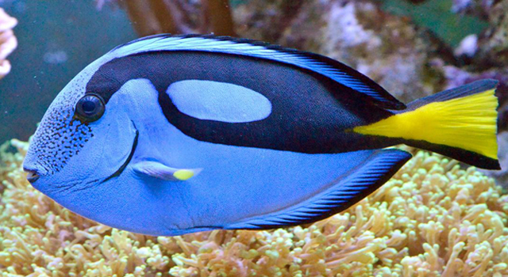
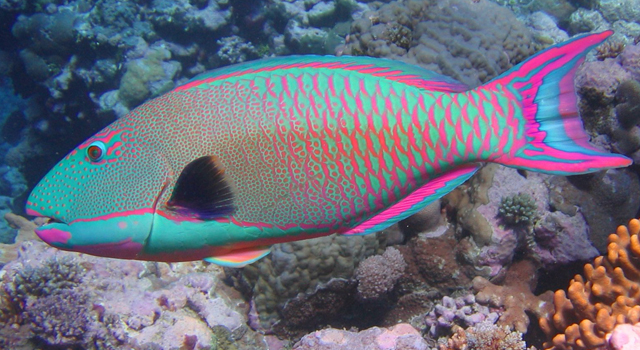
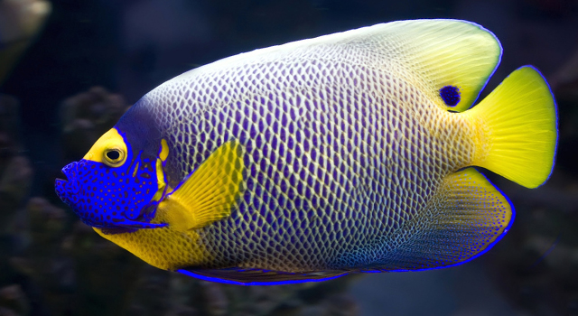
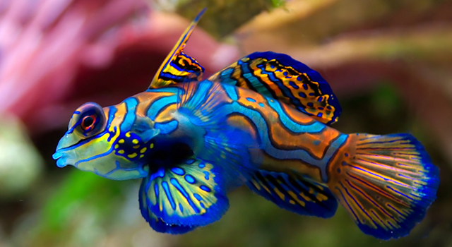

SEA WORLD
-

Regal Tang
×Regal Tang
The Regal Tang is best known for its beautiful blue and black colorway complemented by a yellow tail. This fish can grow up to 12 inches long, and it features small scales as well as a pointy nose. Young regal tangs feed mostly on plankton, while older specimens are omnivorous so they sometimes nibble on algae. Since this fish emits a strong odor, it is often used as bait. However, due to its spectacular beauty, the Regal Tang is also found in aquariums.
-

Rainbow Parrot
×Rainbow Parrot
The Rainbow Parrot fish got its name thanks to its bird-like beak, which it uses quite skillfully to eat small invertebrates found in coral. The fish eats by nibbling on the coral, and it spits out the remains once it is finished thus leaving quite a “mess” on the coral floor. As far as aesthetics are concerned, the Rainbow Parrot fish’s body flaunts combinations of blue, green purple and pink shades complemented by yellow spots.
-

Blueface Angel
×Blueface Angel
The Blueface Angelfish inhabits the shallow waters of the Indo-Pacific, and it flaunts a spectacular combination of blue, yellow and pale blue shades. However, young members of the species are recognized for their 6 vertical white bars and pale blue lines, while their caudal fins flaunt 2 tones of blue. This fish lives out its days among the coral reefs of the Maldives, Japan, Taiwan and Indonesia, but it can also be found in lagoons at depths of up to 82 feet.
-
Pseudanthias Taeniatus
 ×
×Pseudanthias Taeniatus
Pseudanthias Taeniatus is a beautiful red and white fish that can be found in the Red Sea at depths ranging between 32 and 164 feet. This particular species of fish can grow up to 5.1 inches in length, but even though it is quite small, it is definitely one of the world’s most eye-catching sea dwellers.
-

Mandarin
×Mandarin
Last but not least, we’re going to tell you a bit about the Mandarinfish, which could very well be the most beautiful fish on Earth. Also known as the “mandarin dragonet”, this stunning little creature lives in the Pacific, specifically amongst reefs, and since it is quite small (2.6 inches) it is not easily spotted in the wild. Its diet includes fish eggs, polychaete worms and ostracods, and it is known to be quite difficult to keep in aquariums because of its strict eating habits.
Do you know that some fish has amazing talents?
1. Clownfish - scientifically known as “sequential hermaphrodites” - all are initially born male. However,
gender-swapping is rampant. As adults, clownfish develop complex hierarchies headed by a dominant female.
Should she die off, one male will transform himself into the next alpha-female, continuing this strange life cycle.
2. Peacock Flounders are Masters of Disguise. Flat fish don’t get much respect, but maybe they should.
Pigment-altering skin cells enable the peacock flounder to radically change its color scheme within
seconds. By comparison, chameleons generally take several minutes to even slightly modify their hues.
Point goes to the flounder.
3. Sockeye Salmon Use Magnetic Fields to Navigate. These salmon famously migrate for thousands of miles
and return to the same streams in which they hatched. How can they pull off this amazing feat without
a GPS? By picking up on tiny variations in the earth’s magnetic field. No two streams, after all,
give off exactly the same magnetic signature.
4. Parrot Fish Help Build Beaches. Have you ever kicked back on one of Hawaii’s gorgeous white beaches?
Some of that sand was probably fish waste. Parrot fish eat various organisms that live on coral reefs.
While feeding, they inevitably wind up swallowing chunks of rock-hard coral, a side-dish these critters
can’t digest. Such pieces get broken down and pass through their systems as freshly-made sand.
5. Antarctic Tooth Fish Have Freeze-Resistant Blood Streams. Swimming through icy polar depths (which
can dip below -2º Celsius) becomes child’s play when there’s an all-natural antifreeze coursing through your blood.
6. Gobies Go Rock Climbing. Most fish would see trying to scale a waterfall as an impossible task. Luckily,
few fish enjoy extreme sports more than rock-climbing gobies of Hawaii. When gobies need to venture
upstream through swift mountain waters, waterfalls and sheer rock faces are no hurdle: the fish use
their incredibly strong mouths and a unique sucker appendage on their bellies to grab onto rocks and
gradually inch their way up to more hospitable territory.
7. Cookie Cutter Sharks Used to Re-Route Nuclear Submarines. Evolution has equipped these guys to take
circular chunks out of passing animals. And, as the U.S. Navy found out, the 22-inch sharks aren’t
exactly finicky eaters. During the 1970s, cookie-cutters wreaked havoc on unsuspecting subs by chomping
through sensitive cables and rubber sonar equipment, forcing these vessels to return to base.
8. Black Swallowers Really Live Up to Their Names. Generous jaws and a uniquely designed stomach enable
these 10-inch predators to gulp down live meals that are twice their own length and 10 times as massive.
9. Plainfin Midshipmen Hum to Attract Mates. We don’t normally associate fish with vocalization, but
some amorous males of this species, also known as “California singing fish,” emit hour-long humming
noises to arouse potential mates (and angry grunts whenever a competitor zeroes in).
10. Mudskippers Climb Trees. What’s even more amazing than a fish crawling around on land? A fish
crawling up a tree. As adaptable mangrove swamp denizens, mudskippers periodically exit the water and
walk over patches of mud. They’re also known to scale tree branches from time to time. Next up on
their to-do lists: building treehouses.